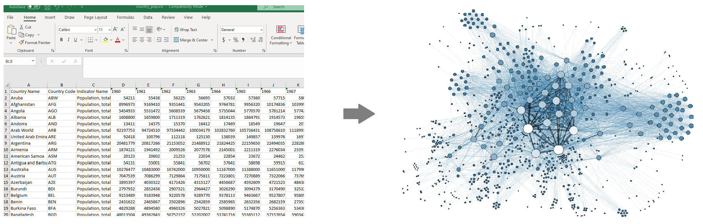
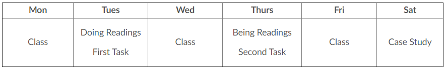

Welcome to Math 335 and CSE 350!
Data Wrangling and Visualization
Wrangle
Oxford Dictionary: “round up, herd, or take charge of (livestock)”

Visualize
Oxford Dictionary: “form a mental image of; imagine; make visible to the eye”

Course Outcomes
- Adapt data from various formats and structures to a desirable format for analysis and visualization.
- Create effective visualizations of large and messy datasets using the grammar of graphics with programming.
- Use current analysis, presentation, and collaboration tools in the data science field (R, Slack, GitHub,etc.) to communicate with data scientists and other parties.
- Develop confidence in and strategies for completing ambiguous requests.
- Describe where data wrangling and visualization resides within the data science profession.
Course Outcomes (Short Version)
Start with data. End with insights.
Course Outcomes
To develop disciples of Jesus Christ who are leaders in their homes, the Church, and their communities.
Why I Love Data
Introduction to Sister Larson
When I was little, I wanted to be…
- An archaeologist
- A spy or detective
- A librarian
- A civil engineer
- An architect
- A costume designer
- An office assistant
Introduction to Sister Larson
What I did instead:
- Undergraduate in Applied Mathematics at BYU-Idaho
- Masters degree in Statistics at BYU
- Biostatistician at Myriad Genetics doing cancer research.
- Then back to BYU-Idaho!
Using Data to Gain Insight
- Everything we do generates data.
- If you have the right tools, you can use those data to answer important questions…and some very silly questions.
Examples
- Dinosaurs and statistical distributions
- The average chocolate chip cookie
- Calculus and The Good Place
- Rounding movie ratings
- Jane Austen and natural language processing
- Text analysis of the Federalist Papers (Also here and here)
- Historical network analysis and visual
- How do dogs know that other dogs are dogs?
- Cancer Research
Class Format and Grading
Weekly Format

- Doing Readings: Learn the how of data science
- Being Readings: Learn the why and so what of data science (Perusall)
- Tasks: Practice doing what you’ve learned (Get messy! Make mistakes!)
- Case Studies: Practice finding insights and clearly explaining insights
Other Assignments
- Semester Project: A “choose your own adventure” case study that you’ll present to the class.
- Coding Challenges: A chance for you to show me what you’ve learned.
- Team Lead: Help “teach one another” by leading a group or class discussion.
Grading Philosophy
- In a specifications-grading system all tasks are evaluated on a high-standards pass/fail basis using detailed checklists of task requirements and expectations.
- Letter grades are earned by passing marks on a set of tasks.
- This system provides for a variety of choice and is closer to how learning, and work, is done outside of a classroom.
- It will be easy for us to tell if work is complete, done in good faith, and consistent with the requirements.
Specifications Grading

Specifications Grading

Specifications Grading

“Decisions Determine Destiny”
What are your priorities?
What do you want out of this class? This semester? This college experience?
Looking Ahead
Task 1 (Tuesday)
- Get R and RStudio working on your computer
- Join Slack and introduce yourself in the #cse350_s21_larson channel
- Create an account on GitHub and tell me your username
On Wednesday
- Answer course/syllabus questions
- Intro to R programming
Task 2 (Thursday)
- “Doing” Readings
- Answer R coding questions
Being Reading (Thursday)
- Click on the link in I-Learn
- Read the article in Perusall
- Leave two comments